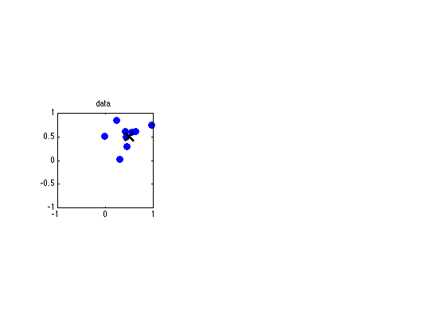

Bayesian inference of the mean of a 2D Gaussian with fixed Sigma
Contents
Sample Data
setSeed(0);
muTrue = [0.5 0.5]';
Ctrue = 0.1*[2 1; 1 1];
mtrue.mu = muTrue;
mtrue.Sigma = Ctrue;
xyrange = [-1 1 -1 1];
ns = [10];
X = gaussSample(mtrue, ns(end));
Plot Data and truth
figure;
subplot(1,3,1)
plot(X(:, 1), X(:, 2), 'o', 'markersize', 8,'markerfacecolor', 'b');
axis(xyrange); title('data'); grid off; axis square
hold on
plot(muTrue(1), muTrue(2), 'x', 'linewidth', 3, 'markersize', 15, 'color', 'k')

Plot Prior
subplot(1,3,2)
prior.mu = [0 0]';
prior.Sigma = 0.1*eye(2);
plotContour(@(x)exp(gaussLogprob(prior, x)), xyrange);
axis(xyrange); title('prior'); grid off; axis square
n=10;
data = X(1:ns(i), :);
n = ns(i);
Subscript indices must either be real positive integers or logicals.
Error in ==> gaussInferParamsMean2d at 33
data = X(1:ns(i), :);
Update Sigma
S0 = prior.Sigma;
S0inv = inv(S0);
S = Ctrue;
Sinv = inv(S);
Sn = inv(S0inv + n.*Sinv);
Update Mu
mu0 = prior.mu;
xbar = mean(data, 1)';
muN = Sn*(n.*Sinv*xbar + S0inv*mu0);
Plot Posterior
post.mu = muN;
post.Sigma = Sn;
subplot(1,3,3)
plotContour(@(x)exp(gaussLogprob(post, x)), xyrange);
axis(xyrange); title(sprintf('post after %d obs', n)); grid off; axis square
printPmtkFigure(sprintf('gauss2dUpdatePostSubplot'))